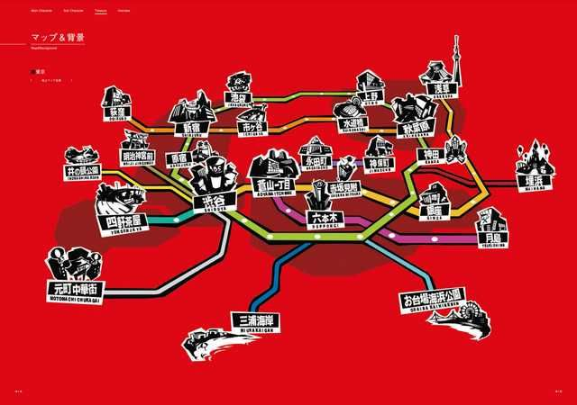
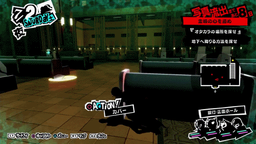

L'histoire prend place au cours d'une année, et le protagoniste doit essayer de balancer la vie de lycéen et de réformer la société en tant que Phantom Thieves. Il vit dans le Café Leblanc et peut explorer les multiples locations du district de Shibuya et autres par station de métro. Il peut jouer à des jeux vidéos, travailler pour des jobs à temps partiel, sortir avec ses amis, afin d'augmenter ses liens sociaux, aller au restaurants, pêcher, etc. Certaines activités permettent d'améliorer quelques stats tels que la vie.
Chaque palace de chaque arc de l'histoire à une date limite à respecter selon quoi c'est Game Over. Ne pas réussir à compléter le palace avant la date limite nous ramènera une semaine avant la date limite. Les combats peuvent être initiés lorsque le protagoniste fait une ambuscade sur une «shadow», ce qui lui permet d'attaquer en premier. Si le protagoniste se fait répérer par les «shadows», le niveau de sécurité du palace augmentera et cela augmentera le niveau des ennemies. Lorsque le niveau de sécurité atteint 100% le party sera forcé de quitter le palace. Lorsque le party réussit à se rendre à la fin du palace, ils peuvent retourner au monde réel et envoyer la calling card à la cible afin de matérialiser le trésor de celui-ci.
Pendant la prologue, le joueur a l'option de choisir le niveau de difficulté entre "safety", "easy", "normal", "hard" et "merciless". À l'exception de "safety", le reste de niveau de difficulté peut être changer à n'importe quelle moment. En mode "safety", si le protagoniste meurt, le joueur aura l'option de faire revivre tout le party avec leur HP et SP remplie, alors que tous les autres modes c'est Game Over! En merciless, les faiblesses, les dommages critiques et les dommages technicales sont triplés.

Le party engage des combats tour par tour avec les «shadows» et les boss en utilisant des armes de mêlées et à distance, ainsi que leurs personas. Le but général dans les combats est de trouver la faiblesse de l'ennemi et de l'exploiter afin de l'assommer. Lorsque qu'un membre du party assomme un ennemi, une nouvelle abilité apparaît appelé "Baton Pass". Le membre du party peut donner son tour à un autre allié afin de booster son attack pour un maximum de 3 fois, un "Baton Pass" ne peut pas être passeé deux fois à la même personne. Si une victime est faible face à un élément, le dommage qu'il recevra fera x1.4 plus mal, à moins qu'il soit à la difficulté merciless, alors que s'il résiste l'élément, il ne recevra que x0.5 du dommage.

Lorsque tous les ennemis sont assommés, cela engendre un "Hold Up". Le protagoniste pourra choisir d'initier une negotiation ou une All-Out-Attack
Les statistiques sociaux dicte l'accéssibilité du protagoniste des différentes parties de sa vie quotidienne. Les augmenter aidera le protagoniste a augmenter ses relations avec ses confidents et l'habilité de travailler à certains endroits